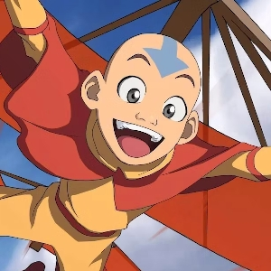
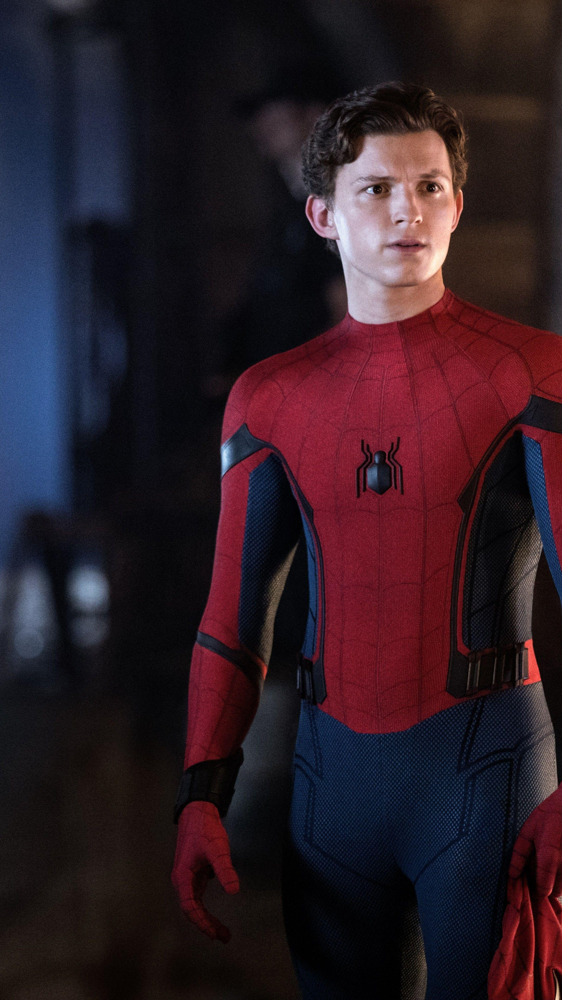
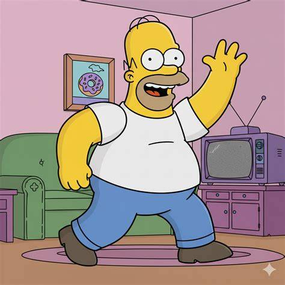

Writing Good Characters
Character Traits
Most characters in stories have recognizable traits, a motive and/or passion, or an iconic power/skill. Of course, there are exceptions. Maybe your main character doesn't have a motive behind their actions or isn't good at anything, but either way a viewer of your story should be able to remember the characters you create, whether it's because they had a cool power, were extremely evil, or had a great moment.
Types of Characters
Usually, in a story, there is a main character, a main villain / character who poses a threat, and memorable side / background characters. If you want to go a little deeper into character writing, you can subvert these expectations (for example, maybe by making the main character the villain, having more than 1 main villain, or making the main character / point of view swap). But usually, the main character should be someone the audience cares about and wants to win, and the villain should be someone that you can hate. Side characters can wild cards / a little more fun, for example maybe's there a side character who does nothing but watch TV or a background character that always appears with a bucket of popcorn. But overall, having a strong main character is usually the most important part of character writing.
Here are some examples of famous main characters and what made them so great.

Harry Potter: Loved for his moral integrity, bravery, loyalty, resilience, and ability to inspire others.

Avatar Aang: Loved for his playful spirit, pacifism, empathy, and light-hearted energy.
Mario: Loved for his iconic design, adventurous personality, and enduring charm.

Spider-Man: Loved for his compelling origin story, relatability, cool powers and courage.

Homer Simpson: Loved for his hilarious humor, flawed humanity, and absurdity.